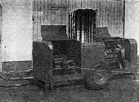

REMOLQUE POR TORNO
A. PERSANO
Trabajo presentado en el Congreso Nacional de Vuelo a Vela
realizado en Zárate, Pcia. de Bs. As., Argentina
14 al 17 de Agosto de 1971
INTRODUCCION:
En 1966 el
Club Argentino de Planeadores Albatros encaró la construcción de un torno de remolque.
Se utilizó para su fabricación un Torno Tost de 2 tambores con 1200 m. de cable en cada
uno. La planta motriz estaba constituida por
un motor Ford de 8 cilindros en V y de 170 HP de potencia y en principio estaba montado
sobre un bastidor con 2 ruedas sin suspensión y una lanza de enganche para los remolques
por medio de un tractor.
La falta de este elemento en el
Club, hizo que sus ensayos se realizaran en forma esporádica sin que en esos momentos
pudieran extraerse experiencias de relieve.
A pesar de ello, en el año 1968,
se formó una brigada de instrucción completa (6 alumnos) que operó durante casi toda la
duración del curso. Problemas de falta de comunicación efectiva entre ambas cabeceras
(punto que se expondrá más adelante), hicieron que, faltando poco tiempo para estar los
alumnos preparados para el vuelo solo, se suspendiera la actividad con este sistema de
envuelo.
Sin embargo, consideramos que el
saldo estadístico puede considerarse como satisfactorio y positivo.
DESCRIPCION DE LA OPERACION
Por ser el
torno un elemento fijo, se lo instala en la zona de frenado, detrás de la cabecera
opuesta a la de decolaje y aterrizaje, lo que permite un aprovechamiento de alrededor de
300 mts. más de pista. Hecho éste que tiene gran importancia en días sin viento.
Estando el planeador estacionado
en su lugar de decolaje y con el ala baja, el ayudante solícita autorización para
enganchar el extremo del cable al planeador, agitando la bandera de señales en forma
vertical y alternada. Al obtenerse idéntica señal (respuesta) desde el equipo de
Torno, procede al enganche del planeador. Hecho esto, nivela el planeador y autoriza a
estirar el cable mediante la rotación completa y continuada de la bandera. Es durante
esta fase de la operación que el operador del Torno debe prestar el máximo de atención,
pues, además de tener que hacer patinar el embrague del motor para que la velocidad de
tensado sea baja, tiene que estar atento al momento en que el ayudante en el ala del
planeador arroja la bandera, que es cuando el operador debe soltar el embrague y acelerar
a fondo para iniciar el decolaje. Cuando el planeador alcanza unos 30 mts. de altura, el
cable deja de tener contacto con la pista.
Remolque por torno
A partir de
ese instante, se comienza a reducir la potencia, dependiendo la velocidad del motor de
la intensidad y dirección del viento (como dato empírico y a solo titulo de
información, se considera que el cable de remolque deberá tener una comba de unos 2 mts.
de cuerda). El código de comunicación entre el planeador y el operador del torno para la
obtención de la velocidad correcta de remolque es: Coordinación de comandos si se tiene
poca velocidad y movimiento del timón de deriva si es excesiva.
DESCRIPCION DE LAS PARTES COMPONENTES
DEL EQUIPO
a) Un torno con
1200 mts. de cable de acero de 5 mm. de diámetro en cuyo extremo tiene colocado un
grillete en el que se toma el paracaídas (80 cm. de diámetro) y el chicote de remolque
que lleva en su otro extremo un fusible para 500 Kg. y el juego de argollas para enganchar
al planeador.
b) Un
automóvil para la recuperación del cable o un cabestrante o torno secundario para tal
fin.
c) Un equipo de comunicación
radial o telefónico entre ambas cabeceras. Nuestras experiencias hicieron evidente la
necesidad ineludible de disponer de un medio de comunicación directo, puesto que, ya
sea por efectos de reverberación, bruma, sol de frente, etc., a una distancia de 1.200
metros se hace extremadamente difícil la interpretación efectiva de las señales
ópticas (banderas) aún en el caso de disponer de la ayuda de un largavista.
EXPERIENCIAS
Durante la
actividad en el año 1968, y una vez organizado el equipo de remolque pudieron obtenerse
los siguientes datos:

La duración del remolque varía entre 30" y 55" según el tipo de planeador y la velocidad del viento.Remolque por torno
TORNO PFEIFFER
En junio del
corriente año se ensayó en Merlo un Torno Pfeiffer de un tambor con 1200 mts. de cable,
con motor similar al utilizado en el TOST y con torno de recuperación.
Las cantidades de envuelos realizados no permite hacer una
evaluación fehaciente del rendimiento de esta máquina, pero dadas sus características y
sistema operativo, que no difiere substancialmente de los del Torno descripto
anteriormente, se puede decir sin temor de cometer errores de importancia que sus
prestaciones son similares. Solamente habría que agregar algo con respecto al torno de
recuperación.
La utilización de este elemento contribuye a dificultar
un tanto la tarea del envuelo, toda vez que el hecho de tener que elevar, junto con el
peso del planeador y del cable principal, el del cable de recuperación, lo que exige al
motor principal una erogación de potencia ostensiblemente mayor.
Según la opinión de pilotos con experiencia en otros
países sobre remolque por torno, la utilización del cabestrante de recuperación no
tiene sentido práctico en zonas de llanura como las nuestras.
Su uso se hace en cambio necesario en zonas de colina o
montaña, donde el acceso de un vehículo al lugar de caída del cable es imposible.
CONCLUSIONES
Si bien el objeto de esta exposición
no es la de ofrecer un dictamen sobre la conveniencia o no de la utilización de este
elemento de envuelo, para mayor ilustración se presenta una comparación de ventajas e
inconvenientes respecto al envuelo del avión.
Avión:
Elección de la zona de corte.
Ventajas:
Elección de la altura de corte. Admite remolques esporádicos.
Inconvenientes: Costo mayor de operación. Riesgo
financiero latente hasta el % total. No admite remolques con pista mojada.
Torno:
Ventajas:
Menor costo operativo. No tiene riesgo latente de destrucción. Mayor riesgo latente de
destrucción.
Inconvenientes: No es rentable en remolques esporádicos. No permite variar la zona de
corte. Limita la elección de la zona de corte.